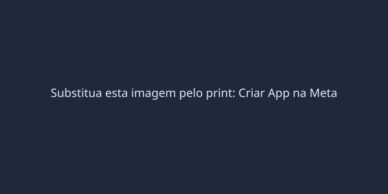
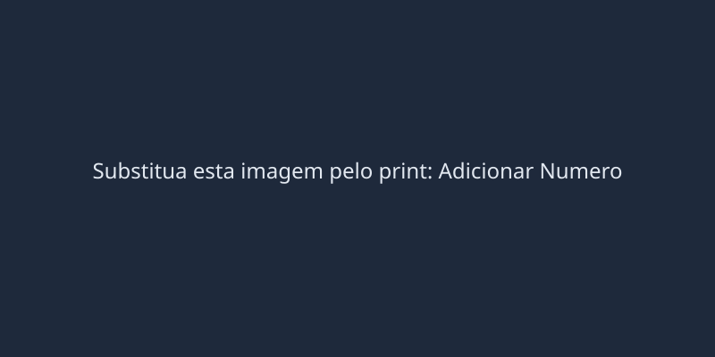
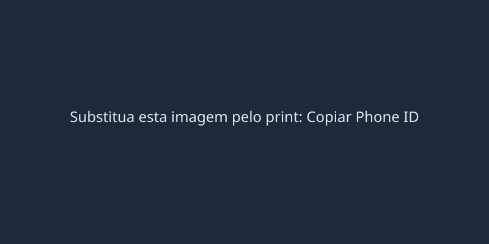
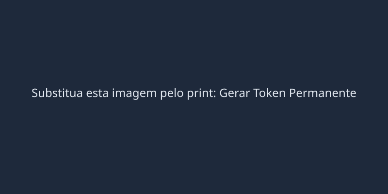
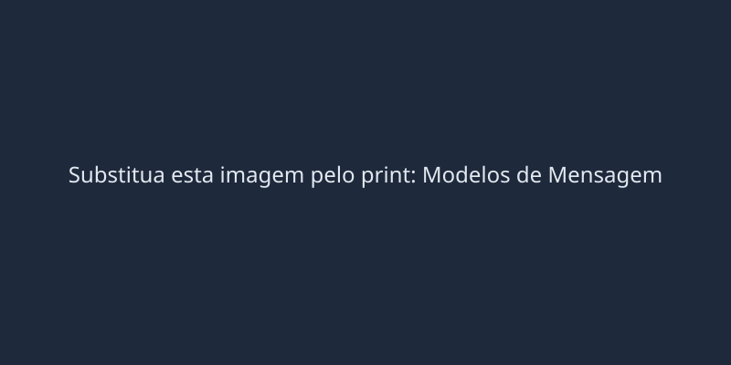

Por que usar a API Oficial?
Diferente do Baileys ou da leitura de QR Code do WhatsApp Web, a Cloud API oficial da Meta jamais desconecta sozinha, não exige um celular físico ligado na tomada, e o risco de banimento de chip é quase nulo se você seguir a regra básica de como redigir os Modelos (Templates).
Atenção: A Meta concede 1.000 mensagens gratuitas por mês dentro da chamada "Janela de Serviço" (quando o cliente fala com você primeiro). Mensagens enviadas fora dessa janela de 24 horas cobram centavos e exigem o uso de um Modelo Aprovado.
Criando o App no Meta for Developers
- Acesse o link exato acima e faça login com a sua conta pessoal do Facebook.
- Clique no botão verde Criar Aplicativo no canto superior direito.
- Na tela "O que você deseja que o seu aplicativo faça?", selecione a opção Outro ou Configurar o login do Facebook / Negócios.
(Procure sempre a opção focada em "Empresa" ou "Business"). - Dê um nome ao seu app (exemplo:
MikroGestor Bot). - Insira o seu e-mail de contato profissional e vincule à sua Conta Empresarial (Business Manager). Em seguida, clique em Criar aplicativo.

Adicionando e Verificando o WhatsApp
Após criar o app, você cairá no Painel de Produtos. Agora vamos ativar o motor do WhatsApp.
- Na página "Adicionar Produtos", desça a tela até achar o bloco do WhatsApp e clique no botão Configurar.
- Na barra lateral esquerda que irá aparecer, clique na setinha para expandir o menu WhatsApp e clique em Configuração da API (API Setup).
- Role até o final dessa página. Você verá um botão chamado Adicionar um Número de Telefone.
- Clique nele, digite o nome de exibição do seu provedor, escolha a categoria (ex: Telecomunicações) e avance.
- Insira o seu número de WhatsApp com o DDD e escolha se quer receber o código de verificação por SMS ou Ligação Telefônica.
- Digite o código recebido para confirmar.
Dica de Ouro: Nunca utilize o seu número pessoal principal. É recomendado comprar um chip novo e exclusivo apenas para rodar o robô do sistema.

Pegando o Identificador (Phone ID)
Agora que o número foi adicionado, precisamos copiar o "CPF" desse número para o sistema.
- Ainda na mesma página de Configuração da API, olhe para o topo da página, no quadro chamado "Enviar e Receber Mensagens".
- Localize o campo Identificador do Número de Telefone (Phone Number ID).
- Você verá um número bem longo (exemplo:
1332999779896363). - Copie este número e guarde-o num bloco de notas (nós vamos colar ele dentro do painel do MikroGestor depois).

Gerando o Token Permanente
Atenção: O token fornecido na página anterior dura apenas 24 horas. Para que o MikroGestor funcione para sempre sem interrupções, você precisa criar um "Token de Usuário do Sistema".
- Acesse o link exato acima (Configurações do Negócio).
- Na barra lateral, certifique-se de estar em Usuários > Usuários do Sistema.
- Clique no botão Adicionar.
- Dê um nome para o usuário (ex:
Robo MikroGestor) e selecione a Função de Administrador do Sistema. Clique em Criar. - Com o novo usuário selecionado na lista, clique no botão Adicionar Ativos.
- No menu esquerdo da telinha que abrir, selecione Aplicativos. Marque a caixinha do aplicativo que você criou no Passo 1 e libere a chave de Controle Total (Gerenciar App). Salve.
- Agora clique no botão Gerar novo token.
- Na janela que abrir, selecione o seu App. Desça a lista de permissões e você DEVE marcar estas duas caixinhas obrigatórias:
- whatsapp_business_messaging
- whatsapp_business_management
- Role até o final e mande Gerar o token.
- O sistema vai te dar um código gigantesco que começa com
EAAZ.... - COPIE IMEDIATAMENTE! A Meta nunca mais mostrará essa tela. Guarde o Token EAAZ no bloco de notas junto com o Phone ID.

Camuflando Modelos (Templates)
Sempre que o MikroGestor precisar "chamar o cliente" primeiro (exemplo: Enviar aviso de que abriu vaga na Fila de Espera), você é obrigado a usar um modelo de mensagem aprovado pela Meta.
Cuidado com a categoria de AUTENTICAÇÃO
Se a Inteligência Artificial da Meta detectar que você está enviando dados de Login, Senhas ou OTP, ela força seu modelo para a categoria de "Autenticação" (que é caríssima e tem regras severas). Para fugir disso, nós camuflamos as mensagens para passarem como "Utilidade" (Aviso Técnico/Entrega de Produto Digital).
- Nunca digite as palavras explícitas "Login", "Usuário", "Senha" ou "Password".
- Nunca use emojis comprometedores, como chaves (🔑) ou cadeados (🔒).
- Utilize variáveis genéricas que pareçam uma configuração. Ex: use
US(para usuário) eSN(para senha/serial number).
Exemplo de Template 100% à Prova de Falhas (Categoria: Utilidade)
Detalhes técnicos:
US: {{2}}
SN: {{3}}
Guarde essas informações. Se precisar de suporte, basta responder aqui.
Como criar? Acesse o link exato acima, clique no botão verde Criar modelo, escolha a categoria Utilidade e o idioma Portuguese (BR). Digite o texto exatamente como aprovamos, coloque variáveis onde as informações mudam, e clique em Enviar. A aprovação geralmente sai em alguns minutos.

Configurando no MikroGestor
Com o Token Permanente (EAAZ...) e o ID do Telefone (Phone ID) copiados no seu bloco de notas, colocar o sistema no ar é moleza.
- Abra o seu painel web do MikroGestor.
- Vá no menu de Configurações > WhatsApp.
- No campo "Modo de Operação", selecione a opção Cloud API (Meta Oficial).
- Cole o seu
Identificador do Telefoneno campoPhone ID. - Cole o seu
Token EAAZ...no campoToken Permanente. - Clique no botão Salvar e Conectar.
O Sistema está Online!
A partir de agora, o MikroGestor responderá a todos os clientes automaticamente. As mensagens nas janelas gratuitas (24h) serão enviadas como texto livre, e os avisos da Fila de Espera usarão os seus templates aprovados. Zero risco de desconexão e operação em paz!
Deu erro? Como desfazer ou deletar tudo
Se você cometeu um erro grave no caminho, bloqueou o número sem querer, ou precisa começar do zero absoluto, fique calmo. Siga os passos abaixo para destruir a configuração antiga de forma segura e liberar seu número para tentar de novo.
1. Como deletar um Número de Telefone
Se você associou o número errado ou quer remover o número da conta atual:
- Acesse o Gerenciador de WhatsApp (Números de Telefone).
- Na lista, localize o seu número e clique no ícone de Lixeira () na extremidade direita.
- Siga as instruções para exclusão. Após excluir, o número fica livre para ser associado a outra conta.
2. Como revogar o Token Permanente
Se o seu Token EAAZ vazou ou parou de funcionar:
- Acesse os Usuários do Sistema.
- Selecione o seu usuário "Robo MikroGestor".
- Na parte inferior da tela, você verá o histórico de tokens gerados. Clique no botão de Lixeira para Revogar o token comprometido. Ele vai parar de funcionar na hora.
- Gere um novo clicando em "Gerar novo token".
3. Como excluir o Aplicativo Inteiro
Se quiser recomeçar o processo totalmente do zero:
- Acesse a página inicial do Meta for Developers e clique no seu App.
- Na barra lateral esquerda, vá em Configurações > Avançado.
- Desça até o final da página e clique no botão vermelho Remover Aplicativo (Delete App). Você precisará digitar a sua senha do Facebook para confirmar a exclusão.